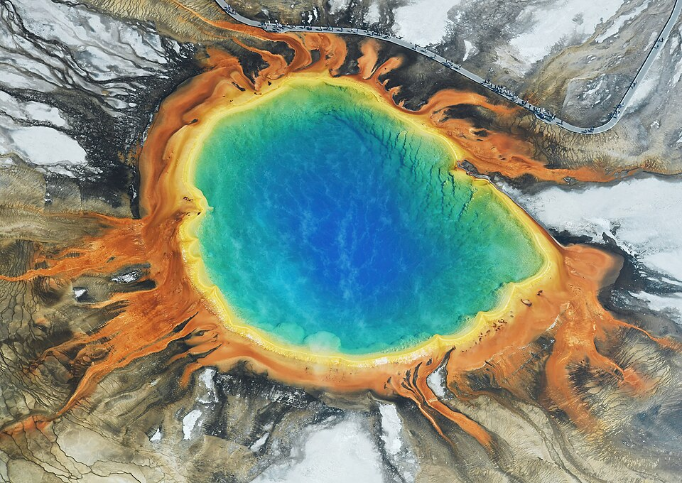
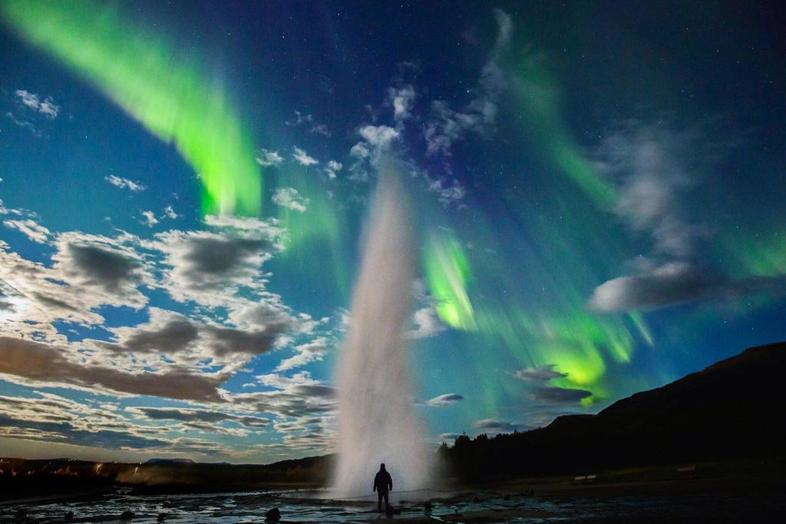
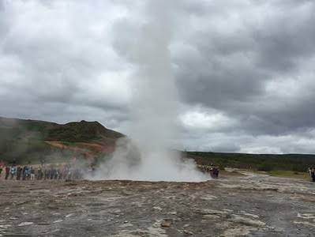

Saga
Í ritrýndum heimildum eftir Saxo Grammaticus er lýst goshver á svæðinu, sem getið er í Gesta
Danorum, verki hans lauk um 1206. Hins vegar eru elstu endanlegu frásagnirnar af hverunum í
Haukadal í núverandi mynd frá árinu 1294, í Oddaverjaannál, þegar jarðskjálftar á
svæðinu ollu verulegum breytingum á landslagi í nágrenninu og sköpuðu nokkrar nýjar
hverir... Lesa meira

Jarðfræði
Núverandi jarðfræðileg skilgreining á heitavatnsgeysi er „ …hver sem einkennist af slitróttri útrás
vatns sem þeytist út í ólgusjó og fylgir gufufasa “ sem er tæknileg leiðrétting á fyrri
skilgreiningum sem nefna gufu og loftsúlu. Geysir er tæknilega séð heitavatnslaugargeysir
frekar en keilugeysir, þannig að mikill hiti tapast út í andrúmsloftið, sem skýrir hvers vegna
hámarkshitastig í leiðslunni er nokkrum metrum fyrir neðan efsta hluta vatnssúlunnar frekar en efst
eins og í Old Faithful... Lesa meira

Nálægir goshverir
Nálægi goshverinn Strokkur gýs mun oftar en Geysir og nær allt að 35 m hæð á nokkurra mínútna
fresti. Strokkur var fyrst lýst árið 1789. Það er andstæða milli þess og Geysis og
pípulagnanna og vísbendinga um að þær séu ekki alveg sjálfstæðar. Rás Strokkur hefur einnig
verið kortlögð í smáatriðum og er 8 m löng, þar sem hún þrengist áður en hún þenst út í holrými um
11 m áður en hún þrengist aftur í sprunguform um 13 m þar sem hitastigið nálgast suðumark... Lesa meira
